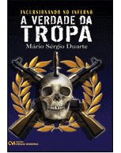

Primeiro o “vazamento” de uma versão não acabada do Tropa de Elite, que acabou com o indiciamento de um funcionário da empresa que fez as legendas para o filme (para exibição no exterior), já que segundo Inquérito Policial em trâmite na DRCPIM (Delegacia de Repressão aos Crimes Contra a Propriedade Imaterial) da Polícia Civil/RJ, uma das cópias feitas originou a grande onda de CD’s piratas nas mãos dos ambulantes em todas as esquinas da cidade, e foi febre nos downloads pela internet.
Depois reportagem do jornal O Globo que deu a entender que o Tenente Coronel PMERJ Mário Sérgio Duarte - autor do Blog Segurança Pública, idéias e ações, acusava o filme de ser na verdade baseado muito mais em seu livro, “Incursionando no Inferno – A Verdade da Tropa” do que no livro “Elite da Tropa”. A reportagem depois acabou desmentida por Mário Sérgio, que negou que pensasse em processar o diretor José Padilha e sua equipe.Depois, um grupo de Oficiais PMERJ que servem no BOPE intentou uma ação visando impedir a exibição do Tropa de Elite, afirmando que o filme atacava a corporação e violava a honra, a dignidade e a integridade física dos policiais. A juíza da 1ª Vara Cível porém negou as liminares, concluindo que as críticas foram feitas sobre ao "sistema", e não é possível pelo filme identificar o BOPE, a PM, o jogo do bicho ou os políticos como sendo "O Sistema".
Finalmente, o tão falado longa, que custou mais de 10 milhões dos cofres públicos através de incentivos fiscais da Lei de Incentivo à Cultura, deve estrear oficialmente no dia 20 próximo no Festival do Rio 2007. Ah, mas é só para convidados VIP’s, os pobres mortais que quiserem assistir ao filme só têm o piratão disponível por hora.
Se porém o “não VIP” e dileto leitor (e eu) quisermos ver uma prévia do Tropa de Elite sem virar criminoso, pelo ao menos já foi lançado o trailer oficial. Nem precisa de tapa-olho. ;)
[youtube 0jeTL9hC3Wg]
Se não rodou, clique aqui para assistir Tropa de Elite